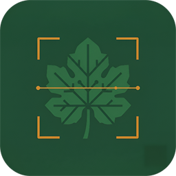

<meta name="viewport" content="width=device-width, initial-scale=1" />
<title>Sigchos Agrotech — Diagnóstico de enfermedades del zapallo</title>
<style>
  :root {
    --bg: #F4F1E9;
    --bg-alt: #ECE7D9;
    --surface: #FFFFFF;
    --surface-border: #E3DECF;
    --ink: #1B2D22;
    --ink-soft: #5C6B5D;
    --ink-faint: #8A9389;

    --green-900: #17301F;
    --green-800: #225C3B;
    --green-700: #276B45;
    --green-600: #2E7D4F;
    --green-500: #3C9B62;

    --orange: #C9761E;
    --orange-soft: #F0B775;

    --mildiu: #A24E29;
    --amarillamiento: #B08D1E;
    --oidio: #7C7768;
    --mancha: #96402C;
    --sano: #24905A;

    --shadow: 0 20px 50px -20px rgba(23, 48, 31, 0.28);
    --font-display: "Iowan Old Style", "Palatino Linotype", "Book Antiqua", Georgia, serif;
    --font-body: -apple-system, BlinkMacSystemFont, "Segoe UI", Roboto, Helvetica, Arial, sans-serif;
    --font-mono: ui-monospace, "SF Mono", "Cascadia Code", "Consolas", monospace;
  }

  @media (prefers-color-scheme: dark) {
    :root {
      --bg: #0F2016;
      --bg-alt: #142A1C;
      --surface: #16301F;
      --surface-border: #274330;
      --ink: #E9EEE4;
      --ink-soft: #A3B2A2;
      --ink-faint: #6E7C6D;
      --green-500: #4FB279;
      --orange: #E6A24C;
      --orange-soft: #F3C68A;
      --shadow: 0 24px 60px -24px rgba(0, 0, 0, 0.55);
    }
  }
  :root[data-theme="dark"] {
    --bg: #0F2016;
    --bg-alt: #142A1C;
    --surface: #16301F;
    --surface-border: #274330;
    --ink: #E9EEE4;
    --ink-soft: #A3B2A2;
    --ink-faint: #6E7C6D;
    --green-500: #4FB279;
    --orange: #E6A24C;
    --orange-soft: #F3C68A;
    --shadow: 0 24px 60px -24px rgba(0, 0, 0, 0.55);
  }
  :root[data-theme="light"] {
    --bg: #F4F1E9;
    --bg-alt: #ECE7D9;
    --surface: #FFFFFF;
    --surface-border: #E3DECF;
    --ink: #1B2D22;
    --ink-soft: #5C6B5D;
    --ink-faint: #8A9389;
    --green-500: #3C9B62;
    --orange: #C9761E;
    --orange-soft: #F0B775;
    --shadow: 0 20px 50px -20px rgba(23, 48, 31, 0.28);
  }

  * { box-sizing: border-box; }
  html { scroll-behavior: smooth; }
  body {
    margin: 0;
    background: var(--bg);
    color: var(--ink);
    font-family: var(--font-body);
    -webkit-font-smoothing: antialiased;
    overflow-x: hidden;
  }
  a { color: inherit; }
  ::selection { background: var(--green-500); color: #fff; }

  .prose { max-width: 640px; }
  .wrap { max-width: 1120px; margin: 0 auto; padding: 0 28px; }

  h1, h2, h3 { font-family: var(--font-display); font-weight: 600; text-wrap: balance; letter-spacing: -0.01em; margin: 0; }
  p { margin: 0; }

  .eyebrow {
    font-family: var(--font-mono);
    font-size: 12.5px;
    letter-spacing: 0.09em;
    text-transform: uppercase;
    color: var(--orange);
    display: inline-flex;
    align-items: center;
    gap: 9px;
  }
  .eyebrow::before {
    content: "";
    width: 20px; height: 1px;
    background: var(--orange);
  }

  /* ---------- NAV ---------- */
  nav {
    position: sticky; top: 0; z-index: 40;
    backdrop-filter: blur(10px);
    background: color-mix(in srgb, var(--bg) 82%, transparent);
    border-bottom: 1px solid var(--surface-border);
  }
  nav .wrap { display: flex; align-items: center; justify-content: space-between; height: 68px; }
  .brand { display: flex; align-items: center; gap: 10px; font-family: var(--font-display); font-size: 19px; font-weight: 700; }
  .brand img { flex: none; width: 28px; height: 28px; border-radius: 8px; }
  .navlinks { display: flex; gap: 30px; font-size: 14.5px; color: var(--ink-soft); }
  .navlinks a { text-decoration: none; }
  .navlinks a:hover { color: var(--ink); }
  @media (max-width: 720px) { .navlinks { display: none; } }

  /* ---------- HERO ---------- */
  .hero {
    position: relative;
    padding: 76px 0 96px;
    overflow: hidden;
  }
  #contours {
    position: absolute; inset: 0;
    width: 100%; height: 100%;
    opacity: 0.55;
    pointer-events: none;
  }
  .hero-grid {
    position: relative;
    display: grid;
    grid-template-columns: 1.15fr 0.85fr;
    gap: 56px;
    align-items: center;
  }
  @media (max-width: 900px) { .hero-grid { grid-template-columns: 1fr; } }

  .hero h1 {
    font-size: clamp(34px, 4.6vw, 54px);
    line-height: 1.06;
    margin-top: 18px;
  }
  .hero h1 em { font-style: italic; color: var(--green-600); }
  :root[data-theme="dark"] .hero h1 em, @media (prefers-color-scheme: dark) { }
  .hero .lede {
    margin-top: 20px;
    font-size: 17.5px;
    line-height: 1.65;
    color: var(--ink-soft);
    max-width: 520px;
  }
  .hero-cta { display: flex; gap: 14px; margin-top: 32px; flex-wrap: wrap; }
  .btn {
    display: inline-flex; align-items: center; gap: 8px;
    padding: 13px 22px;
    border-radius: 10px;
    font-size: 14.5px; font-weight: 600;
    text-decoration: none;
    border: 1px solid transparent;
    cursor: pointer;
    transition: transform .15s ease, box-shadow .15s ease;
  }
  .btn:hover { transform: translateY(-1px); }
  .btn-primary { background: var(--green-700); color: #fff; box-shadow: var(--shadow); }
  .btn-primary:hover { background: var(--green-800); }
  .btn-ghost { border-color: var(--surface-border); color: var(--ink); }
  .btn-ghost:hover { border-color: var(--green-500); }

  .stat-row { display: flex; gap: 34px; margin-top: 46px; flex-wrap: wrap; }
  .stat b {
    display: block;
    font-family: var(--font-mono);
    font-variant-numeric: tabular-nums;
    font-size: 26px;
    color: var(--green-600);
  }
  .stat span { font-size: 12.5px; color: var(--ink-faint); }

  /* ---------- PHONE MOCKUP ---------- */
  .phone-wrap { display: flex; justify-content: center; }
  .phone {
    width: 264px;
    border-radius: 34px;
    background: var(--green-900);
    padding: 10px;
    box-shadow: var(--shadow);
    transform: rotate(-2.2deg);
  }
  .phone-screen {
    background: var(--bg);
    border-radius: 26px;
    overflow: hidden;
    font-family: var(--font-body);
  }
  .phone-topbar { height: 22px; display: flex; align-items: center; justify-content: center; }
  .phone-topbar::before { content: ""; width: 60px; height: 5px; border-radius: 3px; background: var(--surface-border); }
  .phone-cam {
    height: 150px;
    background: linear-gradient(160deg, #1c3a29, #0f2016);
    position: relative;
    display: flex; align-items: center; justify-content: center;
  }
  .ring {
    width: 92px; height: 92px; border-radius: 50%;
    border: 5px solid rgba(255,255,255,0.14);
    position: relative;
    display: flex; align-items: center; justify-content: center;
  }
  .ring::before {
    content: "";
    position: absolute; inset: -5px;
    border-radius: 50%;
    border: 5px solid var(--orange-soft);
    clip-path: polygon(50% 50%, 50% 0%, 100% 0%, 100% 65%, 74% 100%, 50% 100%);
  }
  .ring b { font-family: var(--font-mono); color: #fff; font-size: 20px; font-variant-numeric: tabular-nums; }
  .phone-result { padding: 14px 16px 18px; }
  .chip {
    display: inline-flex; align-items: center; gap: 6px;
    font-size: 11px; font-weight: 700; letter-spacing: .02em;
    padding: 4px 9px; border-radius: 999px;
    color: #fff;
  }
  .chip::before { content: ""; width: 6px; height: 6px; border-radius: 50%; background: currentColor; }
  .phone-result h4 { font-family: var(--font-body); font-size: 15.5px; font-weight: 700; margin: 10px 0 2px; }
  .phone-result p { font-size: 12px; color: var(--ink-soft); line-height: 1.5; }
  .phone-bars { display: flex; flex-direction: column; gap: 6px; margin-top: 12px; }
  .bar-row { display: flex; align-items: center; gap: 8px; font-size: 11px; color: var(--ink-faint); font-family: var(--font-mono); }
  .bar-row .track { flex: 1; height: 5px; background: var(--surface-border); border-radius: 3px; overflow: hidden; }
  .bar-row .fill { height: 100%; border-radius: 3px; background: var(--green-600); }
  .bar-row .pct { width: 34px; text-align: right; }

  /* ---------- SECTION SHELL ---------- */
  section { padding: 92px 0; }
  .section-alt { background: var(--bg-alt); }
  .section-head { max-width: 620px; margin-bottom: 52px; }
  .section-head h2 { font-size: clamp(26px, 3vw, 34px); margin-top: 14px; }
  .section-head p { margin-top: 14px; color: var(--ink-soft); font-size: 16px; line-height: 1.6; }

  /* ---------- HOW IT WORKS ---------- */
  .steps { display: grid; grid-template-columns: repeat(3, 1fr); gap: 4px; border: 1px solid var(--surface-border); border-radius: 18px; overflow: hidden; }
  @media (max-width: 820px) { .steps { grid-template-columns: 1fr; } }
  .step {
    background: var(--surface);
    padding: 34px 30px;
    position: relative;
  }
  .step + .step { border-left: 1px solid var(--surface-border); }
  @media (max-width: 820px) { .step + .step { border-left: none; border-top: 1px solid var(--surface-border); } }
  .step .num {
    font-family: var(--font-mono);
    font-size: 13px; color: var(--orange);
    font-variant-numeric: tabular-nums;
  }
  .step h3 { font-size: 19px; margin-top: 14px; }
  .step p { margin-top: 10px; color: var(--ink-soft); font-size: 14.5px; line-height: 1.6; }

  /* ---------- MODEL / TRANSPARENCY ---------- */
  .model-grid { display: grid; grid-template-columns: 1fr 1fr; gap: 44px; align-items: start; }
  @media (max-width: 900px) { .model-grid { grid-template-columns: 1fr; } }
  .metric-row { display: flex; gap: 40px; margin-bottom: 36px; flex-wrap: wrap; }
  .metric b { display: block; font-family: var(--font-mono); font-size: 40px; color: var(--green-600); font-variant-numeric: tabular-nums; line-height: 1; }
  .metric span { display: block; margin-top: 8px; font-size: 13px; color: var(--ink-faint); max-width: 160px; }

  .class-list { display: flex; flex-direction: column; gap: 10px; }
  .class-item {
    display: flex; align-items: center; gap: 12px;
    padding: 12px 14px;
    background: var(--surface);
    border: 1px solid var(--surface-border);
    border-radius: 12px;
    font-size: 14px;
  }
  .class-dot { width: 10px; height: 10px; border-radius: 50%; flex: none; }
  .class-item .name { font-weight: 600; }
  .class-item .metric-mini { margin-left: auto; font-family: var(--font-mono); font-size: 12.5px; color: var(--ink-faint); font-variant-numeric: tabular-nums; }

  .disclosure {
    margin-top: 26px;
    padding: 18px 20px;
    border-left: 3px solid var(--orange);
    background: color-mix(in srgb, var(--orange) 10%, var(--surface));
    border-radius: 0 12px 12px 0;
    font-size: 14px;
    line-height: 1.6;
    color: var(--ink-soft);
  }
  .disclosure strong { color: var(--ink); }

  /* ---------- FEATURES ---------- */
  .feat-grid { display: grid; grid-template-columns: repeat(3, 1fr); gap: 22px; }
  @media (max-width: 900px) { .feat-grid { grid-template-columns: repeat(2, 1fr); } }
  @media (max-width: 600px) { .feat-grid { grid-template-columns: 1fr; } }
  .feat-card {
    background: var(--surface);
    border: 1px solid var(--surface-border);
    border-radius: 16px;
    padding: 24px 22px;
  }
  .feat-card .ico { width: 34px; height: 34px; color: var(--green-600); }
  .feat-card h3 { font-family: var(--font-body); font-size: 16px; font-weight: 700; margin-top: 16px; }
  .feat-card p { margin-top: 8px; font-size: 13.5px; line-height: 1.55; color: var(--ink-soft); }

  /* ---------- STACK STRIP ---------- */
  .stack-strip { display: flex; flex-wrap: wrap; gap: 10px; }
  .pill {
    font-family: var(--font-mono);
    font-size: 12.5px;
    padding: 7px 13px;
    border: 1px solid var(--surface-border);
    border-radius: 999px;
    color: var(--ink-soft);
  }

  /* ---------- FOOTER ---------- */
  footer { border-top: 1px solid var(--surface-border); padding: 44px 0 40px; }
  .footer-row { display: flex; justify-content: space-between; align-items: center; flex-wrap: wrap; gap: 16px; }
  .footer-links { display: flex; gap: 22px; font-size: 13.5px; color: var(--ink-soft); }
  .footer-links a { text-decoration: none; }
  .footer-links a:hover { color: var(--ink); }
  footer .copy { font-size: 12.5px; color: var(--ink-faint); }

  [data-reveal] { opacity: 0; transform: translateY(16px); transition: opacity .6s ease, transform .6s ease; }
  [data-reveal].in { opacity: 1; transform: none; }
  @media (prefers-reduced-motion: reduce) {
    [data-reveal] { opacity: 1; transform: none; transition: none; }
    #contours { display: none; }
  }
</style>

<nav>
  <div class="wrap">
    <div class="brand">
      
      Sigchos Agrotech
    </div>
    <div class="navlinks">
      <a href="#modelo">El modelo</a>
      <a href="#funciones">Funciones</a>
      <a href="#stack">Stack</a>
    </div>
  </div>
</nav>

<section class="hero">
  <canvas id="contours"></canvas>
  <div class="wrap hero-grid">
    <div>
      <span class="eyebrow">Sigchos Agrotech · Diagnóstico agrícola con IA</span>
      <h1>El diagnóstico del zapallo,<br /><em>a un enfoque de cámara</em></h1>
      <p class="lede">Un agricultor fotografía una hoja de zapallo. Un modelo de IA la clasifica en el propio celular, sin conexión, en segundos. La app responde con el diagnóstico, el nivel de confianza y qué hacer al respecto.</p>
      <div class="hero-cta">
        <a class="btn btn-primary" href="#modelo">Ver cómo funciona el modelo</a>
        <a class="btn btn-ghost" href="#funciones">Explorar funciones</a>
      </div>
      <div class="stat-row">
        <div class="stat"><b>5</b><span>clases de diagnóstico</span></div>
        <div class="stat"><b>83%</b><span>exactitud de validación</span></div>
        <div class="stat"><b>0 ms</b><span>latencia de red — corre on-device</span></div>
      </div>
    </div>
    <div class="phone-wrap">
      <div class="phone">
        <div class="phone-screen">
          <div class="phone-topbar"></div>
          <div class="phone-cam">
            <div class="ring"><b>87%</b></div>
          </div>
          <div class="phone-result">
            <span class="chip" style="background:var(--mildiu)">Mildiu</span>
            <h4>Confianza: 87%</h4>
            <p>Hongo foliar favorecido por humedad alta. Se recomienda mejorar ventilación y aplicar fungicida cúprico.</p>
            <div class="phone-bars">
              <div class="bar-row"><span style="width:64px">Mildiu</span><div class="track"><div class="fill" style="width:87%"></div></div><span class="pct">87%</span></div>
              <div class="bar-row"><span style="width:64px">Oídio</span><div class="track"><div class="fill" style="width:9%;background:var(--ink-faint)"></div></div><span class="pct">9%</span></div>
              <div class="bar-row"><span style="width:64px">Sana</span><div class="track"><div class="fill" style="width:4%;background:var(--ink-faint)"></div></div><span class="pct">4%</span></div>
            </div>
          </div>
        </div>
      </div>
    </div>
  </div>
</section>

<section id="problema">
  <div class="wrap">
    <div class="section-head" data-reveal>
      <span class="eyebrow">El problema</span>
      <h2>El diagnóstico llega tarde, o no llega</h2>
      <p class="prose">En el cantón Sigchos, identificar a tiempo el mildiu, el oídio o una mancha foliar en un cultivo de zapallo suele depender de la experiencia del agricultor o de un técnico que puede tardar días en visitar la parcela. Para entonces, el hongo ya se propagó. Sigchos Agrotech pone ese primer diagnóstico en el bolsillo, en el momento en que se detecta la hoja sospechosa.</p>
    </div>
  </div>
</section>

<section class="section-alt" id="como-funciona">
  <div class="wrap">
    <div class="section-head" data-reveal>
      <span class="eyebrow">Cómo funciona</span>
      <h2>De la hoja al diagnóstico, en tres pasos</h2>
    </div>
    <div class="steps" data-reveal>
      <div class="step">
        <span class="num">01</span>
        <h3>Captura en vivo</h3>
        <p>La app abre su propia cámara embebida — no la del sistema — para encuadrar la hoja de cerca, o permite elegir una foto de la galería.</p>
      </div>
      <div class="step">
        <span class="num">02</span>
        <h3>Clasificación on-device</h3>
        <p>Un modelo TensorFlow Lite (MobileNetV2, transferencia de aprendizaje) corre directo en el celular. La imagen nunca sale del dispositivo para ser clasificada.</p>
      </div>
      <div class="step">
        <span class="num">03</span>
        <h3>Diagnóstico + recomendación</h3>
        <p>Resultado con severidad, anillo de confianza, top-3 de probabilidades, recomendaciones agrícolas y ubicación en el mapa de incidencia.</p>
      </div>
    </div>
  </div>
</section>

<section id="modelo">
  <div class="wrap">
    <div class="section-head" data-reveal>
      <span class="eyebrow">El modelo</span>
      <h2>Cifras reales, sin inflar</h2>
      <p class="prose">Entrenado por transferencia de aprendizaje sobre MobileNetV2, con el dataset público <em>Pumpkin Leaf Diseases Dataset</em> (Kaggle, 2 000 imágenes). Estas son las métricas reales sobre el set de validación (400 imágenes) — incluidas sus debilidades.</p>
    </div>

    <div class="model-grid" data-reveal>
      <div>
        <div class="metric-row">
          <div class="metric"><b>83%</b><span>exactitud global (accuracy)</span></div>
          <div class="metric"><b>83%</b><span>recall macro promedio</span></div>
        </div>
        <div class="disclosure">
          <strong>Transparencia del modelo:</strong> la clase <em>mancha_foliar</em> tiene la precisión más baja (66%) — se confunde con mildiu y oídio. El recall de <em>oídio</em> también es más flojo (72%). La clase <em>daño por plaga</em> se retiró del catálogo por falta de un dataset público adecuado para entrenarla.
        </div>
      </div>

      <div class="class-list">
        <div class="class-item"><span class="class-dot" style="background:var(--sano)"></span><span class="name">Hoja sana</span><span class="metric-mini">alta confianza</span></div>
        <div class="class-item"><span class="class-dot" style="background:var(--mildiu)"></span><span class="name">Mildiu</span><span class="metric-mini">buena precisión</span></div>
        <div class="class-item"><span class="class-dot" style="background:var(--amarillamiento)"></span><span class="name">Amarillamiento</span><span class="metric-mini">buena precisión</span></div>
        <div class="class-item"><span class="class-dot" style="background:var(--oidio)"></span><span class="name">Oídio</span><span class="metric-mini">recall 72%</span></div>
        <div class="class-item"><span class="class-dot" style="background:var(--mancha)"></span><span class="name">Mancha foliar</span><span class="metric-mini">precisión 66%</span></div>
      </div>
    </div>
  </div>
</section>

<section class="section-alt" id="funciones">
  <div class="wrap">
    <div class="section-head" data-reveal>
      <span class="eyebrow">Funciones</span>
      <h2>Todo lo que necesita el agricultor, y el técnico</h2>
    </div>
    <div class="feat-grid" data-reveal>
      <div class="feat-card">
        <svg class="ico" viewBox="0 0 24 24" fill="none" stroke="currentColor" stroke-width="1.6"><rect x="3" y="7" width="18" height="13" rx="2"/><path d="M8 7l1.5-3h5L16 7"/><circle cx="12" cy="13.5" r="3.2"/></svg>
        <h3>Diagnóstico por cámara</h3>
        <p>Clasificación instantánea on-device, con severidad y top-3 de probabilidades.</p>
      </div>
      <div class="feat-card">
        <svg class="ico" viewBox="0 0 24 24" fill="none" stroke="currentColor" stroke-width="1.6"><path d="M3 12a9 9 0 1018 0 9 9 0 00-18 0z"/><path d="M3 12h18M12 3a13 13 0 010 18M12 3a13 13 0 000 18"/></svg>
        <h3>Mapa de incidencia</h3>
        <p>Vista satelital de zonas afectadas, filtros con/sin daño y navegación táctil a cada foco.</p>
      </div>
      <div class="feat-card">
        <svg class="ico" viewBox="0 0 24 24" fill="none" stroke="currentColor" stroke-width="1.6"><path d="M12 3v3M12 18v3M4.2 4.2l2.1 2.1M17.7 17.7l2.1 2.1M3 12h3M18 12h3M4.2 19.8l2.1-2.1M17.7 6.3l2.1-2.1"/><circle cx="12" cy="12" r="4"/></svg>
        <h3>Clima + alerta fúngica</h3>
        <p>Pronóstico OpenWeather con aviso de riesgo de hongos según humedad y temperatura.</p>
      </div>
      <div class="feat-card">
        <svg class="ico" viewBox="0 0 24 24" fill="none" stroke="currentColor" stroke-width="1.6"><path d="M4 19V6a2 2 0 012-2h8l6 6v9a2 2 0 01-2 2H6a2 2 0 01-2-2z"/><path d="M14 4v6h6"/></svg>
        <h3>Historial filtrable</h3>
        <p>Cada diagnóstico queda registrado y se puede filtrar por clase o fecha.</p>
      </div>
      <div class="feat-card">
        <svg class="ico" viewBox="0 0 24 24" fill="none" stroke="currentColor" stroke-width="1.6"><path d="M3 20l4-9 4 5 3-4 7 8"/><path d="M3 20h18"/></svg>
        <h3>Fincas, parcelas y cultivos</h3>
        <p>Gestión jerárquica del terreno: finca → parcela → cultivo de zapallo, con hectáreas y etapa.</p>
      </div>
      <div class="feat-card">
        <svg class="ico" viewBox="0 0 24 24" fill="none" stroke="currentColor" stroke-width="1.6"><rect x="4" y="3" width="16" height="18" rx="2"/><path d="M8 8h8M8 12h8M8 16h5"/></svg>
        <h3>Panel web administrativo</h3>
        <p>KPIs, diagnósticos por día, distribución por clase y métricas del modelo — para el equipo técnico.</p>
      </div>
    </div>
  </div>
</section>

<section id="stack">
  <div class="wrap">
    <div class="section-head" data-reveal>
      <span class="eyebrow">Stack técnico</span>
      <h2>Construido con Clean Architecture + MVVM</h2>
      <p class="prose">Nueve <em>features</em> independientes, cada una con sus capas de dominio, datos y presentación. Sin service locator: la composición de dependencias se arma a mano en <code>main.dart</code>.</p>
    </div>
    <div class="stack-strip" data-reveal>
      <span class="pill">Flutter / Dart</span>
      <span class="pill">Provider (ChangeNotifier)</span>
      <span class="pill">Firebase Auth</span>
      <span class="pill">Cloud Firestore</span>
      <span class="pill">Firebase Storage</span>
      <span class="pill">TensorFlow Lite</span>
      <span class="pill">MobileNetV2</span>
      <span class="pill">google_maps_flutter</span>
      <span class="pill">OpenWeather API</span>
      <span class="pill">Flutter Web + fl_chart</span>
    </div>
  </div>
</section>

<footer>
  <div class="wrap footer-row">
    <span class="copy">© 2026 Sigchos Agrotech · Alfonso Arroyo, Pedro Frías, Ariel Llumiquinga, Germán Cáceres</span>
    <div class="footer-links">
      <a href="privacy/">Política de privacidad</a>
      <a href="eliminar-cuenta/">Eliminar cuenta</a>
      <a href="mailto:arroyoalfonso1031@gmail.com">Contacto</a>
    </div>
  </div>
</footer>

<script>
  (function () {
    var canvas = document.getElementById('contours');
    var ctx = canvas.getContext('2d');
    var reduce = window.matchMedia('(prefers-reduced-motion: reduce)').matches;
    var w, h, t = 0;

    function resize() {
      var hero = canvas.parentElement;
      w = canvas.width = hero.offsetWidth;
      h = canvas.height = hero.offsetHeight;
    }
    window.addEventListener('resize', resize);
    resize();

    function isDark() {
      var root = document.documentElement;
      if (root.getAttribute('data-theme') === 'dark') return true;
      if (root.getAttribute('data-theme') === 'light') return false;
      return window.matchMedia('(prefers-color-scheme: dark)').matches;
    }

    function draw() {
      ctx.clearRect(0, 0, w, h);
      var lineColor = isDark() ? 'rgba(79,178,121,' : 'rgba(46,125,79,';
      var lines = 9;
      for (var i = 0; i < lines; i++) {
        ctx.beginPath();
        var baseY = (h / lines) * i + 30;
        var amp = 26 + i * 2.4;
        var freq = 0.012 + i * 0.0008;
        var phase = t * 0.15 + i * 0.6;
        for (var x = 0; x <= w; x += 8) {
          var y = baseY + Math.sin(x * freq + phase) * amp + Math.sin(x * freq * 2.3 + phase * 1.3) * (amp * 0.3);
          if (x === 0) ctx.moveTo(x, y); else ctx.lineTo(x, y);
        }
        ctx.strokeStyle = lineColor + (0.5 - i * 0.045) + ')';
        ctx.lineWidth = 1;
        ctx.stroke();
      }
      if (!reduce) { t += 0.02; requestAnimationFrame(draw); }
    }
    draw();

    var mo = new MutationObserver(function () {});
    mo.observe(document.documentElement, { attributes: true, attributeFilter: ['data-theme'] });
  })();

  (function () {
    var items = document.querySelectorAll('[data-reveal]');
    var io = new IntersectionObserver(function (entries) {
      entries.forEach(function (e) {
        if (e.isIntersecting) { e.target.classList.add('in'); io.unobserve(e.target); }
      });
    }, { threshold: 0.15 });
    items.forEach(function (el) { io.observe(el); });
  })();
</script>
